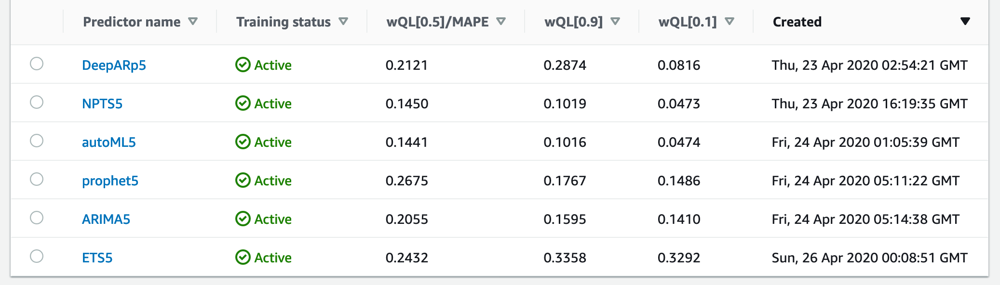
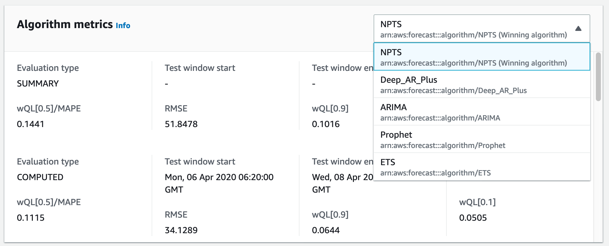

평가¶
예측(forecast)결과에 감탄을 자아내며 무릎을 쳐 대지 않는다면 그 결과에 대해서 생각하게 됩니다. '과연 이 예측은 맞을 것인가?' 이 질문에 대해 '그렇다', '아니다'라고 답변할 수 있는 사람도 기계도 세상에는 존재하지 않습니다.
다만, '그러할 것을 확신할 학률은 얼마 정도입니다'가 적당하리라 봅니다. 그것이 그렇게 될 확률 이 아니라, 그것이 그렇게 될 것을 확신할 확률 입니다. 두 문장이 같은 뜻이라고 여겨지신다면 저의 전달력이 좋지 못해서 입니다. 혹은 제가 뭔가를 잘 못 배웠을지도 모르겠습니다. 하지만, 한 가지 분명한 것이 있습니다. 아직 경험 많은 베테랑 보다 나은 예측을 할 수 있는 기계는 없다고 봅니다. 베테랑을 RESPECT!
어려운 이야기¶
우리가 지금부터 볼 것들은 모두 숫자[數字]입니다.
예측기(predictor)¶
예측기 훈련이 끝나면 다음의 화면을 보실 수 있습니다.

위 그림 가운데 컬럼에는 복잡한 숫자들이 보입니다. 숫자들이 출력되고 많은 자리를
찾이하는 것을 봐서는 중요해 보입니다. 그것에 대한 설명으로 공식 개발자 안내서에서는
'예측기 지표'에서 설명하고 있습니다.
이미 아시겠지만, wQL은 wQuantileLoss의 약어입니다.

위 수식을 해석하는 건 저의 역할이 아니라는 생각을 합니다. 관련된 설명은 '예측기 지표'에 있습니다. 저 곳의 설명이 이해하기 쉬운 건 아니지만, 이 보다 잘 설명할 자신 또한 없습니다. 한 번 즈음 정독해 보십시다. 기본적인 용어 설명도 곁들여져 있으니, 꼭 읽어 보시기 바랍니다.
이 글을 읽는 누군가가 좋은 설명을 적어 주시길를 간절히 기대하는 마음도 있습니다. 본 문서의 리포지토리는 언제나 당신을 환영합니다 :-D
쉬운 이야기¶
Amazon Forecast는 목적성이 강한 서비스입니다. 사용자가 깊이 있는 관련 지식을 갖추지 못 해도, 원하는 결과를 얻을 수 있습니다. autoML은 그 길을 알려줍니다. 의심은 배우는 자의 기본 자세입니다. 하지만, 배우는 자가 충분한 시간과 노력을 기할 수 없다면, 의심을 거두고 autoML이 열어주는 빛의 길에 발 딛는 것을 두려워 하지 마세요.
autoML¶
autoML은 여러 예측기의 평가 결과들을 상호 비교하여 최적의 알고리즘을 선택해 줍니다. 앞서 예측기 훈련에서 언급한 것처럼, 단 하나의 단점은 소요 시간이 길다는 것 뿐입니다. (시간은 곧 돈이라는 것도 알고는 있습니다만)
하지만, 만약 여러분께서 보유한 시계열 데이터로 Amazon Forecast를 활용하고 싶을 때 가장 큰 걸림돌이 되는 것이 '어떤 알고리즘이 맞을지 모르겠다'라면 autoML을 선택하는 것이 가장 좋은 선택이 될 것입니다. 아래의 그림을 봅시다.

하나의 데이터-셋을 가지고 Amazon Forecast가 제공하는 모든 알고리즘들을 사용하여 예측기를 생성했습니다. 그 중 autoML도 있습니다. 그리고 개발자 공식 문서에 설명을 떠맡긴 숫자들이 세 개의 행(column)을 이루며 줄을 지어 있습니다. 이들의 숫자들은 낮을수록 예측의 정확도가 높다고 단순히 해석해도 오류는 없습니다. 그리고 autoML은 가장 적합한 알고리즘을 선택합니다. 이 두 조건을 && 로 엮으면, - autoML을 제외하고 - 이 데이터-셋으로 예측기가 가장 잘 훈련된 알고리즘은 'NPTS5'라는 이름을 가진 것입니다.
autoML도 같은 방식으로 알고리즘을 선택합니다. 다음의 그림을 봅시다, 위 그림에서 'autoML5'를 선택하고 들어간 화면입니다.

여기에서 autoML은 wQL[0.5]/MAPE을 기준으로 알고리즘을 선택했고, 그 결과로
NPTS를 Winning autoML algorithm으로 선정했다는 것을 알 수 있습니다.
단 한 번 제대로 된 예측을 하고 싶을 때에도, autoML을 선택하는 것이 좋겠습니다. 그리고 앞으로 지속적으로 학습하고 예측을 하고 싶을 때에도 특별한 배경지식이 있고, 그 배경지식으로 확고한 신념이 또한 마음 속에 정직하게 자리하고 있지 않다면 - 자신의 지식을 의심할 정도로 양심적이라면 - 첫회를 autoML로 알고리즘을 선택받고 앞으로 '지속적'으로 훈련하고 예측할 때 그 선택받은 알고리즘을 사용하는 것이 현명할 수 있습니다.
사실, autoML을 검증하기 위해 이 페이지에 나오는 것처럼 모든 알고리즘을 한 번씩 예측기 학습에 동원할 필요는 없습니다. autoML은 아래의 그림처럼 개별 알고리즘의 메트릭을 친절하게 보여 줍니다.

예측 정확도 향상¶
같은 알고리즘으로 예측기를 훈련할 때, 'Number of backtest windows' 값을 늘려 백테스트로 예측기를 조정해 보는 시도도 가능하겠습니다. 물론, 충분한 데이터를 입력했다는 가정이 있다면 말이죠. 하지만,
가장 중요한 건 대상 시계열 데이터를 충분히 많이 준비하고 훈련에 사용하는 것입니다. 데이터-셋 내 최대 행(row)수는 1,000,000,000.입니다. 10억 행을 입력할 수 있습니다. 걱정하지 마시고 많이 준비하십시다.
대상 시계열 데이터-셋 이외의 데이터-셋은 정확도 향상에 크게 도움이 되지 않습니다. 항목 메타-데이터는 말할 것도 없습니다. 노력은 많은 데이터를 시계열 데이터에 걸맞게 되도록이면 자르지 말고 하나의 셋으로 만들어 훈련에 사용하는 것입니다. 최근 Amazon Forecast는 시계열 데이터의 최대 문제, missing value - 즉, 누락 값을 처리하는, 그러니까 그 공백을 채워내는 방법을 고안하여 채택했습니다. 사용자의 고민 중 가장 큰 하나가 사라지게 되었습니다.